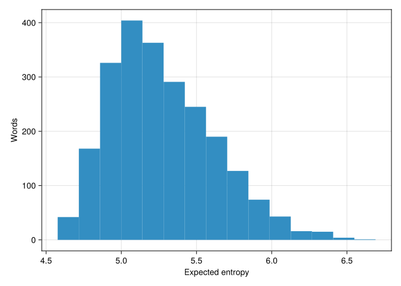

using DataFrames, DataFramesMeta, CairoMakie
CairoMakie.enable_only_mime!("png")The optimal Wordle play gives the distribution of possible mystery words with lowest entropy on average. A Wordle play gives you two pieces of information: the intersection and set difference of its letter set with that of the mystery word. For each possible information returned, we can count the number of 5-letter words consistent with this information. Taking the log gives the entropy of this remaining-word distribution. Average over possible information returned to get expected entropy. The whole computation is only a couple lines of Julia:
words = lowercase.(readlines(expanduser("~/Downloads/filtered-wordle-words.csv")))df = @chain DataFrame(w=words, b=BitSet.(collect.(Int, words))) begin
crossjoin(_, _, makeunique=true)
@rtransform(:yes = intersect(:b, :b_1), :no=setdiff(:b, :b_1))
groupby([:w, :yes, :no])
@combine :n = length(:w_1)
groupby(:w)
@combine :entropy = sum((:n ./ sum(:n)) .* log.(:n))
@orderby :entropy
end
df[1:10, :]10×2 DataFrame
| Row | w | entropy |
|---|---|---|
| String | Float64 | |
| 1 | stare | 4.57705 |
| 2 | irate | 4.59931 |
| 3 | alert | 4.6006 |
| 4 | alter | 4.6006 |
| 5 | later | 4.6006 |
| 6 | arise | 4.62593 |
| 7 | raise | 4.62593 |
| 8 | arose | 4.62895 |
| 9 | least | 4.64095 |
| 10 | slate | 4.64095 |
With this approach, it looks like ‘stare’ is the best possible first word. But there’s a lot of options that are nearly as good:
f = Figure()
ax = Axis(f[1, 1], xlabel = "Expected entropy", ylabel = "Words")
hist!(ax, df[!, :entropy])
f